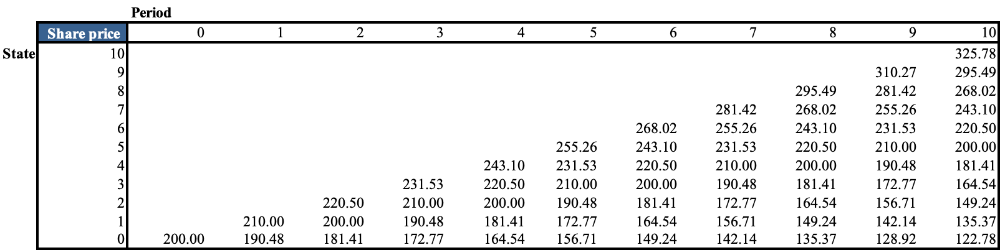
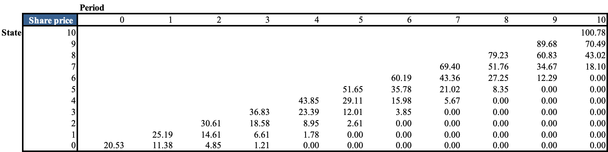

Introduction
Option is a financial instrument that allows holders the right, not the obligation, to sell or buy underlying assets at a predetermined price (strike price). A call option on Alibaba stocks (BABA) with the strike price of 225USD/share allows holders to buy BABA at that price regardless of the spot price. It means a call option generates profits if the spot price of underlying assets is higher than the strike price. In contrast, a put option lets holders sell BABA shares at 225USD/share no matter how low the price is at the maturity and generates profits if the share price falls below the strike price. There are 2 main types of options which are US and European options. European options are available to exercise at maturity only, while US options can be exercised by maturity. Because of this feature, US options can be more expensive than European options having the same maturity and strike price.
Binomial pricing model
Any valuation method is built based on an inference of the arbitrage theory that 2 portfolios having the same cash flows should have the same price. Therefore, the objective of the binomial pricing method is to design a portfolio that replicates returns of an option to determine the option price through the cost of establishing that portfolio.
Return of put option is \(max(S_T-P,0)\)
Return of call option is \(max (P-S_T,0)\)
We use the max function here because if the spot price does not lie within the favorable range, holders will not exercise that option, meaning the return is 0.
One period model
Scenario: The current price of BABA shares is 200 dollars. After a period, the price goes up by 5% to 210/share or down by 4.76% to just 190.48/share. With the strike price of 205/share, the upstate return is \(max(210-205,0)=5\), and the downstate return is \(max(190.48-205,0)\) = 0.
We now try to design a portfolio of x amount of savings and y shares of BABA. Assuming saving cash pays interest of 2% every period, x amount today is worth \(1.02x\) after a period. And y shares of BABA will be \(210y\) in the upstate and \(190.48y\) in the downstate. Finding x and y requires solving the following equations:
Upstate: \(1.02x + 210y = 5\)
Downstate: \(1.02x + 190.48y = 0\)
The solution to the above system of equations is \(x = -47.82\) and \(y = 0.256\). This result means we are borrowing -47.82 dollars to buy 0.256 shares of BABA. The cost of this portfolio is \(x + y200 = 3.396\). As two products having the same return must have the same price, the fair price of a call option on BABA shares must be 3.396.
Multi-period model:
Multi-period model is still based on the approach of one-period calculations, but it is a bit more complicated. If a European call option on BABA has the strike price of 225/share and matures in 10 periods with an interest rate of 2%, what is the fair price of this option?
In the binomial model, the stock's future price is determined by 2 factors, u and d, which are the percentages of price changes in the upstate and downstate of the next period. Note that u.d=1. If BABA is worth 200/share today, and \(u = 105\%\), \(d=\frac{1}{u} \approx 95.24\%\). It means if the current price is 210 , at cell(1,1), the upstate in the next period, cell(2,2), is \(210u=220.05\). And the downstate, cell(2,1), is 200. As \(u.d=1\), cell(2,1) is the upstate of cell (1,0) and downstate of cell(1,1). Following this logic, the price lattice of the stock for 10 periods looks like this:
To start off, we need to calculate the payoff of the option at maturity. Imagine we are at cell (9,9) where the price is 310.27. At maturity, period 10, the stock price is 325.78 in the upstate and 295.49 in the downstate where option returns are 100.78 and 70.49, respectively. The system of equations corresponding to this information is
Upstate: \(1.02x+325.78y=100.78\)
Downstate: 1\(.02x+295.49y=70.49\)
Solving these equations yield \(x=-220.59\) USD \(y = 1\), meaning the option price is \(-220.59+1*310.27 = 89.68\) at (9,9).
Let’s step back one period to cell (8,8), what is the fair price of the option at this state? The only thing we need to notice here is that the payoff of the option is no longer \(max(P-S_T,0)\) because we cannot exercise the option before its maturity at period 9. Hence, the option can make either 91.43 in the upstate or 62.02 in the downstate. Therefore, the corresponding equations are:
Upstate: \(1.02x+310.27y=89.68\)
Downstate: \(1.02x+281.42y=60.83\)
Solving these equations yield \(x=-216.26\) USD and \(y = 1\) share, meaning the fair price of an option is \(-216.26+1*295.49 = 79.23\) at cell (8,8).
To value the option at the moment, we keep calculating backward until cell(0,0) to obtain the fair price of 20.53 an option
Cracking down the math
In the one-period model section, the option price is identified by solving the system of equations that correspond to returns of upstate and downstate in the next period. In general, we can denote r as the one-period interest rate, u and d as how much the price will be after a period, \(C_u\) and \(C_d\) as the return of options in the upstate and downstate, and P at the current price of the stock. As a result, \(P.u\) and \(P.d\) are the stock prices in the upstate and downstate of the period. The system of equations is:
Upstate: \(r.x+P.u.y=C_u\)
Downstate: \(r.x+P.d.y=C_d\)
The general solution to the equation is, \(x = \frac{C_u-C_d}{P(u-d)}\) and \(y = \frac{1}{r}\frac{A.d-Bu}{P(d-u)}\). And the cost of the portfolio is \(x+Py=\frac{1}{r }[C_u\frac{r-d}{u-d}+C_d\frac{u-r}{u-d}]=\frac{1}{r}[C_uq+C_d(1-q)]\) where \(q = \frac{u-r}{u-d}\). We define q as the risk-neutral probability of option as the risk does not depend on the likelihood of upstate and downstate events but on r, d, and u, which are constants. This way, \(\frac{1}{r}[A\frac{r-d}{u-d}+B\frac{u-r}{u-d}]\) can be expressed as \(E_0^Q(C)\), the present value of the expected return of the stock in the risk-neutral world. The discount actor \(\frac{1}{r}\) discounts the expected return back one period.
Applying this expression, we do not need to solve every two equations to obtain a fair option price at a state. Instead, in excel, the option price of cell(8,8) can be calculated directly from the formula \(cell(8,8) = \frac{1}{r}[cell(9,9)q+cell(9,8)(1-q)]\), or \(cell(i,j) = \frac{1}{r}[cell(i+1,j+1)q+cell(i+1,j)(1-q)]\), where \(q = \frac{r-d}{u-d}\).
Interestingly, the option price tends to decrease from period 10 to period 0. This is because the prices of underlying stocks are more to the north of the strike price, meaning the option's payoff increases. Qualitatively, the closer we are to maturity on this line, the more certain we are about payoffs of the option, and we have to pay more for this certainty.
There are some states where the option is worth nothing, such as cell(7,0). Following the same logic, the reason is that the current stock price is so low that its upstate in the next period is still not higher than the strike price to make profits. Thus there is no point investing in something that will never pay off.
US option
Compared to EU option, US option is more flexible as it can be exercised by maturity. And we account for this flexibility with one adjustment. At any state, we can either exercise the option to get the payoff of \(max(P-S_T,0)\) or hold that option longer to get the expected return of \(E_Q[C]\), whichever is higher. As a result, the return of a US option should be \(max(max(P-S_T,0),E_Q[C])\) instead of \(E_Q[C]\)
Calibration
To make the model more applicable, the time span of a period is determined by T/n where T is the maturity of options and n is the number of periods. As the risk-free rate for each period is not always available, we can compute it as \(e^{\frac{rT}{n}}\) where r is the annual risk-free rate. If underlying stocks pay annual dividends c, that quantity is adjusted to \(e^{\frac{(r-c)T}{n}}\). Considering these changes, the risk-neutral probability, q, is now \(\frac{e^{\frac{(r-c)T}{n}} - d}{u-d}\). The valuation machine below is built based on this calibrated binomial pricing method.